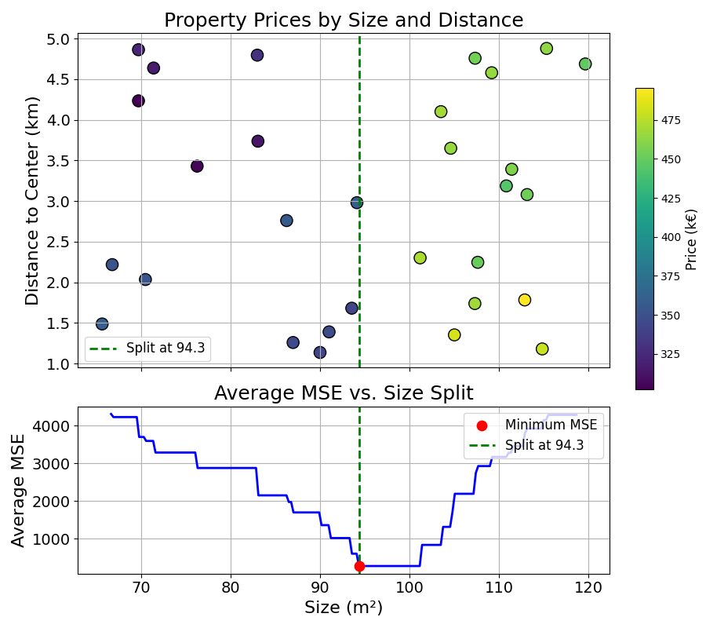

14 Probabilities and Regression with Decision Trees
The Decision Tree algorithm introduced in this section has two components:
- Identifying the best split with an evaluation criterion (e.g., the Gini Impurity Coefficient)
- Splitting the data recursively until no more splitting is possible
The following chapter will explore how to use this algorithm to output probabilities instead of class labels, and extend this to regression with Decision Trees.
14.1 From labels to probabilities
The Decision Tree algorithm shown above only outputs class labels as prediction (“malignant” or “benign”). In the simple version described above, an observation is assigned a prediction using a majority vote within the leaf. This is similar to the KNN model. How could the Decision Tree algorithm be used to output probabilities?
Let’s think about this problem using a modified version of the example data:

In this example, leaf number 3 and 4 both contain observations from the two classes. Now, imagine that a new observation has \(x_1=2.1\) and \(x_2=0.5\), what prediction would we output?
Based on the values of this observation’s feature, it will land in leaf number 3. In this leaf, the large majority of training observations are of class \(\times\) (10 out of 11) with a single \(\circ\) observation.
Using a similar approach to what was used in KNN, instead of applying a majority vote within a leaf, we could use the frequency of the class as a predicted probability.
In this example, the new observation will have a probability of \(\times\) of:
\[ \frac{10}{11} \approx 0.909 \]
Exercise 14.1 Compute the probability of \(\times\) for an observation with features: \(x_1 = 3\) and \(x_2 = 2\). Show that it is approximately 0.17
That is it, nothing more complex.
14.2 From classification to regression
So far, we have focussed on classification problems, in which the objective is to assign a label (such as the malignancy of a tumour) to new observations. How can the same model be applied to a regression problem, i.e., to the prediction of a continuous variable, like the price of a property.
The core idea would remain the same: split the data recursively into subgroups to make them as “pure” as possible. This concept of “purity” or “homogeneity” is easy to define in a classification problem. A group that is “pure” is a group that contains a large majority of one class.
In regression problems, how could we define this concept of homogeneity? Think about it in terms of property prices. A homogeneous group would be a group that contains properties with similar prices. In such a group, each item would have little difference with the average price.
Now, how to generate predictions of continuous values from these subgroups? In the classification case, we could just use majority vote or average for probability predictions. In line with what was shown with KNN, the same principle of average can be used for regression problems.
The predicted price of each new property would be the average of all the property prices in the same subgroup. This is similar to the logic of probability prediction described earlier.
A split is good if the average in each leaf has a low error, if the average is an accurate prediction of the observations in this leaf.
Let’s illustrate this with a simple example.
14.2.0.1 Splitting Data
Imagine we are building a model predicting property prices based on Property Size (\(m^2\)) and Distance to Centre (\(km\)):

We could take a subset of this data (prices now in k €):
| Size (m²) | Distance (km) | Price (k €) |
|---|---|---|
| 60 | 2.0 | 320 |
| 80 | 1.5 | 400 |
| 120 | 5.0 | 350 |
| 70 | 3.0 | 310 |
| 150 | 1.0 | 600 |
| 90 | 4.0 | 330 |
Suppose the first split is on size < 100. This divides the data into two groups:
- Group A sizes (
size < 100): 60, 80, 70, 90 - Group B sizes (
size ≥ 100): 120, 150
How good is this split? To do this, we would compute the average of Group A and B, these will be our prediction for both groups.
The prediction for Group A is the average price in Group A:
\(\text{Group A Mean} = \frac{320 + 400 + 310 + 330}{4} = 340\)
The prediction for Group B is the average price in Group B:
\(\text{Group B Mean} = \frac{350 + 600}{2} = 475\)
We now need to measure how good of a prediction these averages are. How would you do it?
If you thought of the Mean Squared Error, well done! You can refer to the Model Evaluation chapter if this concept is still not clear enough.
For each group, we can compute the Mean Squared Error (MSE) of the prices:
Group A: \[ \begin{aligned} \text{MSE}_a &= \frac{(320-340)^2 + (400-340)^2 + (310-340)^2 + (330-340)^2}{4} \\ &= \frac{400 + 3600 + 900 + 100}{4} \\ &= \frac{5000}{4} = 1250 \end{aligned} \]
Group B: \[ \begin{aligned} \text{MSE}_b &= \frac{(350-475)^2 + (600-475)^2}{2} \\ &= \frac{(-125)^2 + (125)^2}{2} \\ &= \frac{15625 + 15625}{2} \\ &= \frac{31250}{2} = 15625 \end{aligned} \]
This is a good start, but leaves us with two MSE numbers. How could we summarise these into one?
One idea is to compute the average MSE. It is a weighted average of the MSEs of the two groups (weighted by the number of observations in each group):
\[ \begin{aligned} \text{Weighted MSE} &= \frac{n_a}{n_a + n_b} \cdot \text{MSE}_a + \frac{n_b}{n_a + n_b} \cdot \text{MSE}_b \\ &=\frac{4}{6} \cdot 1250 + \frac{2}{6} \cdot 15625 = 833.33 + 5208.33 = 6041.67 \end{aligned} \]
14.2.1 Trying Different Splits
At each splitting step, the algorithm would try different splitting features and values, and would pick the one that minimises average MSE.
This process can be visualised by showing the average MSE for each splitting value of the size feature:

Following the same recursive process as the one shown in the classification case, we can build a Decision Tree that partitions the overall space into subgroups.
This stepwise learning process is shown below:

As described in this section, Decision Trees can be easily applied to regression tasks. The only significant change is the evaluation of split quality with the Mean Squared Error instead of the Gini Impurity Coefficient.
14.3 Final Thoughts
This chapter concludes our exploration of Decision Trees. Summarising once more the Decision Tree Learning algorithm:
- Evaluate splits using a homogeneity criterion: Gini or MSE
- Split groups recursively
- Output either class labels or probabilities using averaging
To test your knowledge, you can try the practice exercise below.
Looking back, we now know how to train and evaluate two different Machine Learning models. This is already a lot. The next section will explore the last missing piece of the puzzle: Data Preprocessing, making data ready for modelling.
14.4 Practice Exercise
Exercise 14.2 Suppose you are building a Decision Tree to detect fraudulent transactions. You use two features, both measured on a 0–100 scale:
- Transaction Amount ($) (0–100)
- Customer Age (years) (0–100)
You have the following 10 transactions in your training data:
| Transaction Amount | Customer Age | Fraudulent? |
|---|---|---|
| 95 | 22 | Yes |
| 90 | 25 | Yes |
| 92 | 23 | Yes |
| 97 | 21 | Yes |
| 93 | 24 | Yes |
| 94 | 23 | No |
| 20 | 80 | No |
| 25 | 78 | No |
| 18 | 82 | No |
| 23 | 77 | No |
A new transaction occurs with an amount of 93 and customer age 23.
- Build a Decision Tree with a single split (for simplicity) using the training data and finding the splits that minimise the Gini Impurity Coefficient?
- Using the tree generated, what is the predicted probability of fraud of the new observation?
14.5 Solutions
Solution 14.1. Exercise 14.1
\(\frac{2}{12} = \frac{1}{6} \approx = 0.17\)
Solution 14.2. Exercise 14.2
- We try splitting the data using different features and feature values. For each split, we compute the weighted Gini Impurity Coefficient. The resulting coefficients can be seen in the two tables below. For each table, the symbols \(\leq\) and \(>\) represent the two resulting subgroups:
- \(\leq\): observations with feature value lower or equal to the splitting value
- \(>\): observations with feature value greater than the splitting value
Splits for Transaction Amount
| Split at | ≤ Split Fraud | ≤ Split Non-Fraud | > Split Fraud | > Split Non-Fraud | Weighted Gini |
|---|---|---|---|---|---|
| 19.00 | 0 | 1 | 5 | 4 | 0.444 |
| 21.50 | 0 | 2 | 5 | 3 | 0.375 |
| 24.00 | 0 | 3 | 5 | 2 | 0.286 |
| 57.50 | 0 | 4 | 5 | 1 | 0.167 |
| 91.00 | 1 | 4 | 4 | 1 | 0.320 |
| 92.50 | 2 | 4 | 3 | 1 | 0.417 |
| 93.50 | 3 | 4 | 2 | 1 | 0.476 |
| 94.50 | 3 | 5 | 2 | 0 | 0.375 |
| 96.00 | 4 | 5 | 1 | 0 | 0.444 |
Splits for Customer Age
| Split at | ≤ Split Fraud | ≤ Split Non-Fraud | > Split Fraud | > Split Non-Fraud | Weighted Gini |
|---|---|---|---|---|---|
| 21.50 | 1 | 0 | 4 | 5 | 0.444 |
| 22.50 | 2 | 0 | 3 | 5 | 0.375 |
| 23.00 | 3 | 1 | 2 | 4 | 0.417 |
| 23.50 | 3 | 1 | 2 | 4 | 0.417 |
| 24.50 | 4 | 1 | 1 | 4 | 0.320 |
| 51.00 | 5 | 1 | 0 | 4 | 0.167 |
| 77.50 | 5 | 2 | 0 | 3 | 0.286 |
| 79.00 | 5 | 3 | 0 | 2 | 0.375 |
| 81.00 | 5 | 4 | 0 | 1 | 0.444 |
Both Transaction Amount of 57.5 and Customer Age of 51 achieve a Gini Coefficient of 0.167. Both of them would work. This solution will pick Customer Age = 51 as splitting value.
The resulting tree is:

- Generating the prediction for observation: Customer Age: 23 and Transaction Amount: 93, the observation will fall into the left leaf, as \(23 \leq 51\).
The predicted probability for this observation is then the average probability of Fraud in the leaf:
\[ P(\text{Fraud}) = \frac{5}{5+1} \approx 83\% \]